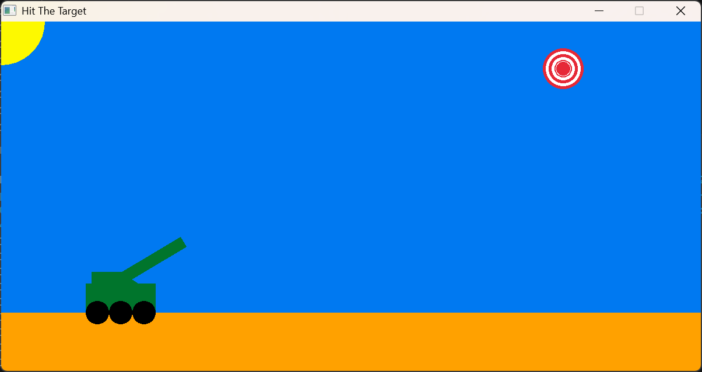

Projects
Hit The Target

Olive Garden Calorie Calculator
Splash Page

Involvements


I recently graduated from the Software Engineering program at Florida Gulf Coast University (FGCU). Currently I am working as a Help Desk Associate at FGCU's ITS Help Desk where I assist students, faculty, and staff with maintaining and troubleshooting their devices, assist them with DUO Mobile (a 2FA system), and general questions. At the Help Desk, I've worked with the Zendesk ticketing system, worked a lot with Dell products, and learned a lot about customer service. Although currently it looks like my career is pivoting more towards Information Technology, I continue to have a passion for software development, and spend my free time working on web development projects. Recently I have been dedicating some time to a resource management project that I started working on for my Intro to Data Engineering class. The project was for Family Connect, a local non-profit in Ft Myers that helps mothers, children, and the elderly. The website provided them a one stop shop for finding local resources they could share with their community. If any of my skills align with your needs feel free to reach out at lentzfortune424@gmail.com
